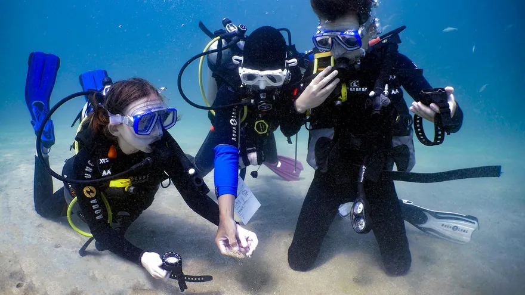
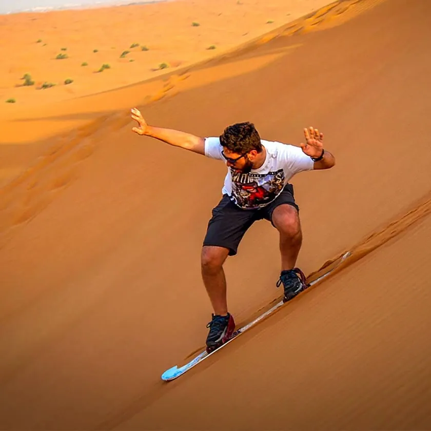
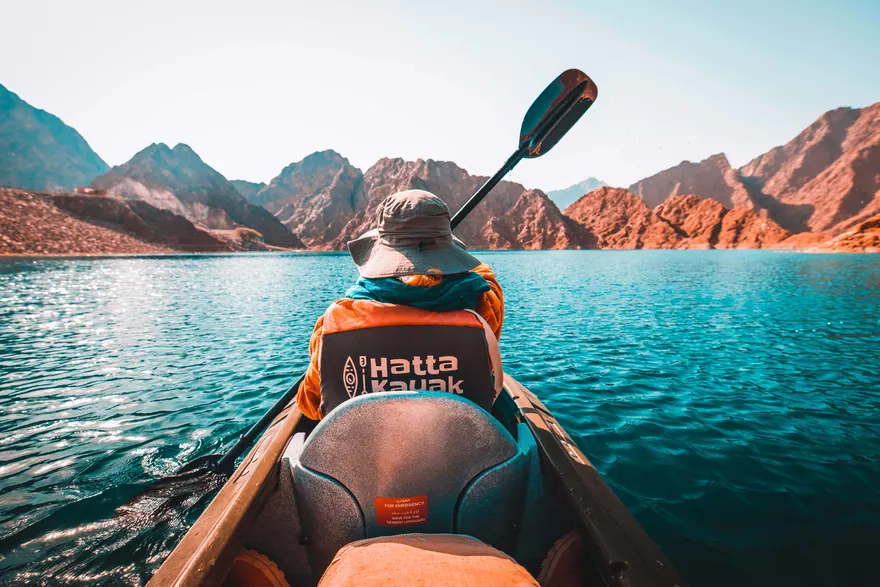
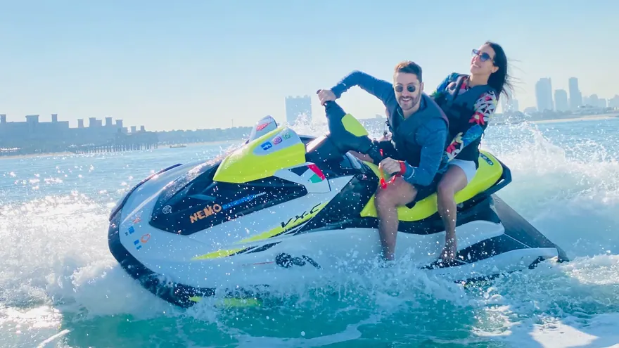
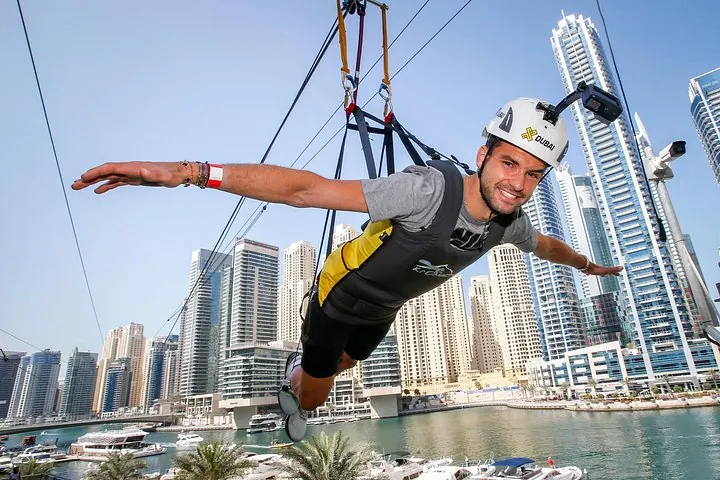
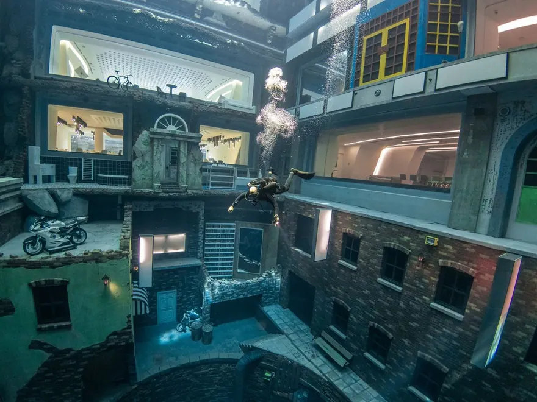
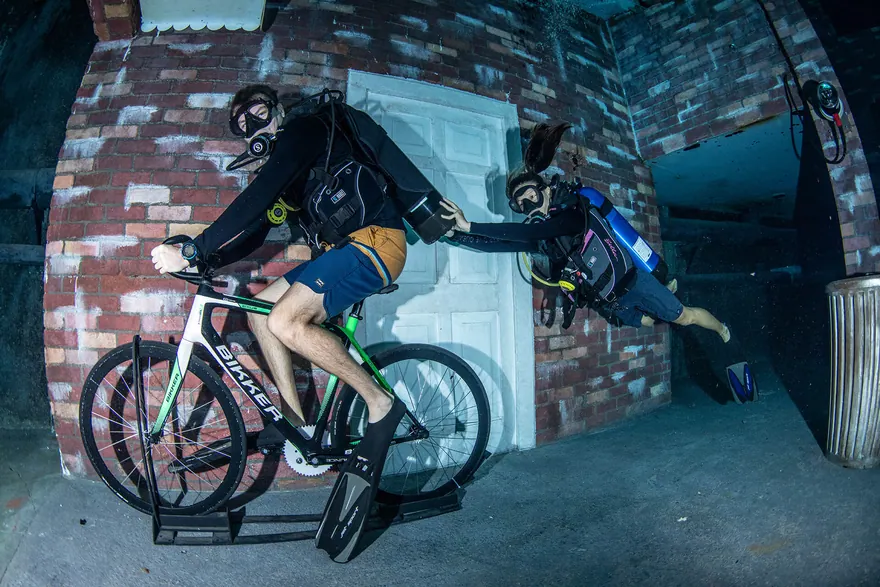

Дайвинг · Джумейра
Первое погружение в море
Al Boom Diving. Начнёте в бассейне с инструктором, затем — погружение у Jumeirah Beach. Программа для новичков.
от 399 AED с человека≈17 900 ₽ за двоих · ориентир агрегатора
Посмотреть даты на PADI
Источник цены

Пустыня · около 4 часов
Красные дюны и верблюды
Сафари OceanAir на внедорожнике, сэндбординг и короткая прогулка на верблюде. Трансфер включён. Квадроцикл добавляется при выборе тарифа.
от 127,80 AED с человека≈5 700 ₽ за двоих · базовый вариант
Выбрать сафари
Пустыня · с ужином
На верблюдах на закате
У Platinum Heritage верховая часть длится около 45 минут. После прогулки — вечер в лагере с ужином. В программе указан трансфер из отелей Дубая.
795 AED с человека≈35 600 ₽ за двоих
Выбрать прогулку

На воде · Хатта
Каяк среди гор
Двухместный каяк на водохранилище Хатта. По тарифу проката время катания не ограничено. Дорога из Дубая занимает около полутора часов, транспорт оплачивается отдельно.
150 AED за двухместный каяк≈3 360 ₽ за двоих
Посмотреть прокат

На воде · 30 минут
Гидроцикл у Бурдж-аль-Араб
Маршрут Nemo Watersports вдоль побережья с инструктором. По условиям оператора можно ехать вдвоём на одном гидроцикле за ту же цену.
299 AED за гидроцикл≈6 690 ₽ за двоих на одном
Выбрать время

На высоте · Dubai Marina
Зиплайн над Мариной
Спуск над небоскрёбами и яхтами с XLine. Оператор указывает, что фото и видео включены в стандартный билет. Условия по росту и весу есть на странице XDubai.
699 AED с человека≈31 300 ₽ за двоих
Посмотреть слоты

Под водой · Deep Dive Dubai
Прогулка в затопленном городе
Sunken City Walk — прогулка с гидом по площадке под водой в полнолицевой маске. Оператор указывает, что сертификат дайвера и навыки плавания не требуются.
600 AED с человека≈26 860 ₽ за двоих
Выбрать прогулку

Дайвинг · Deep Dive Dubai
Дайвинг в затопленном городе
Discover Scuba Dive с инструктором, снаряжением и погружением до 12 метров в бассейне с подводными декорациями. Есть тариф для новичков.
1 800 AED с человека≈80 570 ₽ за двоих
Выбрать погружение